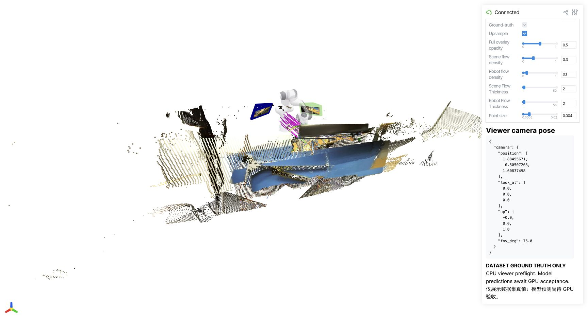

Verified
Source pinned
Official main / data history and DINOv3 submodule retained.
SOURCE → DATA → INFERENCE → TRAINING
6 / 9 stages verified. Updated 2026-10-11T20:46:02+00:00
Pending checks have not been run or accepted. Existing GPU jobs are preserved.
Official main / data history and DINOv3 submodule retained.
Isolated Python 3.10 / Torch 2.5.1 / CUDA 12.4.
15 / 15 files hash-verified. Four model checkpoints plus two dataset subsets.
Restore encoder tensors from the released NVIDIA checkpoint, then verify strict loading.
Restore → integrity check → fixed manifest → WebDataset → official CPU loader.
Actual supported-domain evaluation; subset metrics are smoke outputs.
Three domain configurations × 20 updates, followed by 2 resumed updates each.
Viser prediction / ground-truth toggle and timeline; real previews appear after validation.
Matching source commit, submodule revision and tracked-file hashes.
GPU acceptance is running sequentially on one low-utilization H800 under the authorized sharing policy. Existing jobs remain running.
DROID · 578 train clips · 49 test clips · 7 WDS shards
BEHAVIOR · 5202 train clips · 578 test clips · 5 WDS shards
Small subsets validate the pipeline. They do not reproduce full-dataset benchmark scores.
4 / 4 released checkpoints strictly loaded on CPU. Numerical GPU forward passes are a separate pending check.

Actual DROID dataset ground truth in native Viser. CPU preflight only; this is not a model prediction.
main 05484826dfef · data 3872ec6ee731 · DINOv3 54694f7627fd
Official code · Private development repository · Machine-readable status